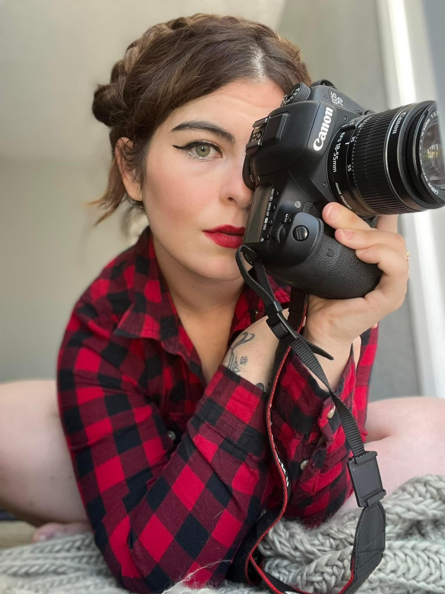

Kelsie E. Stark
Capturing the raw resilience of the human spirit through the lens and the pen.

The Art of Becoming
Kelsie E. Stark is a medically retired Army Veteran, fine-art photographer, and poet based in El Paso, Texas.
Her work explores the intersection of trauma and liberation, using visual and written narratives to document the strength found in vulnerability.
Secure the Vision
Currently accepting select photography commissions and literary inquiries for 2026.
Book with Kelsie El Paso & Worldwide